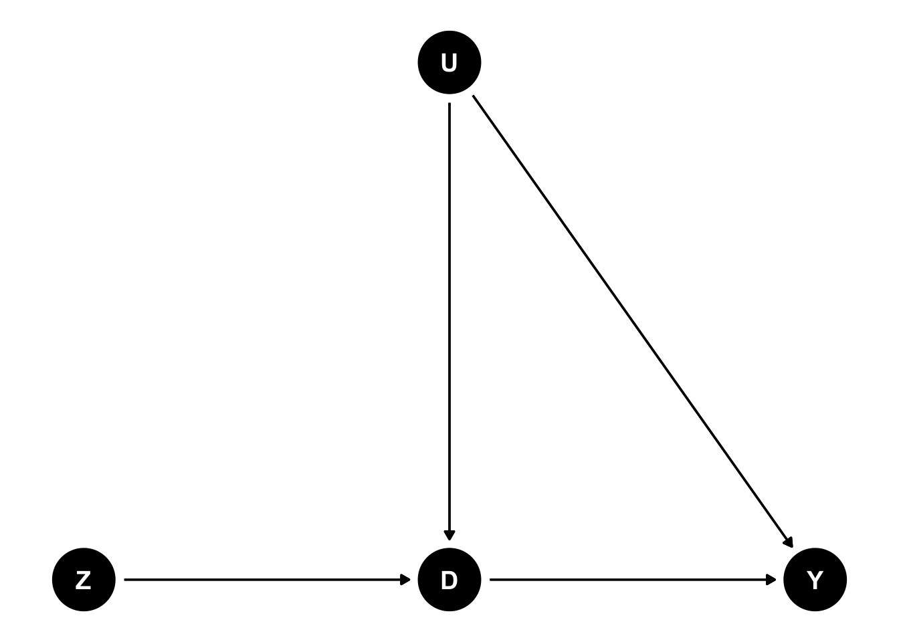
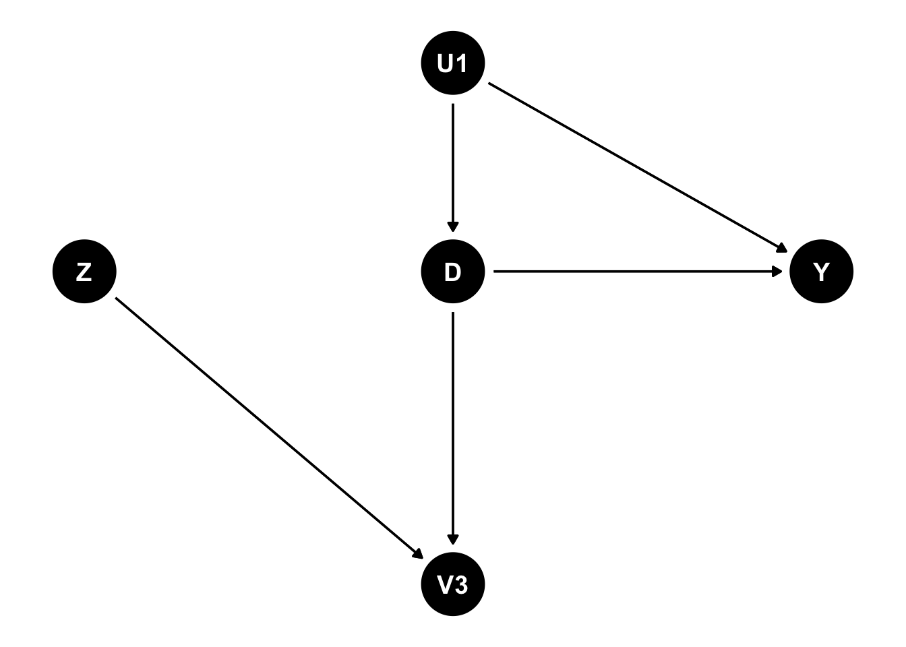
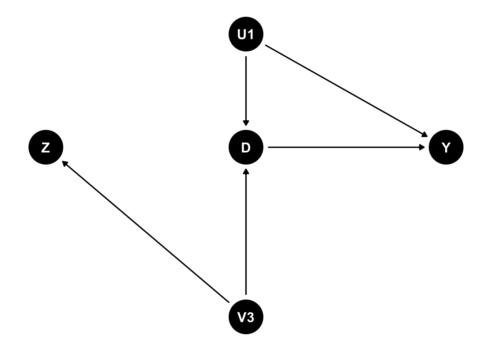
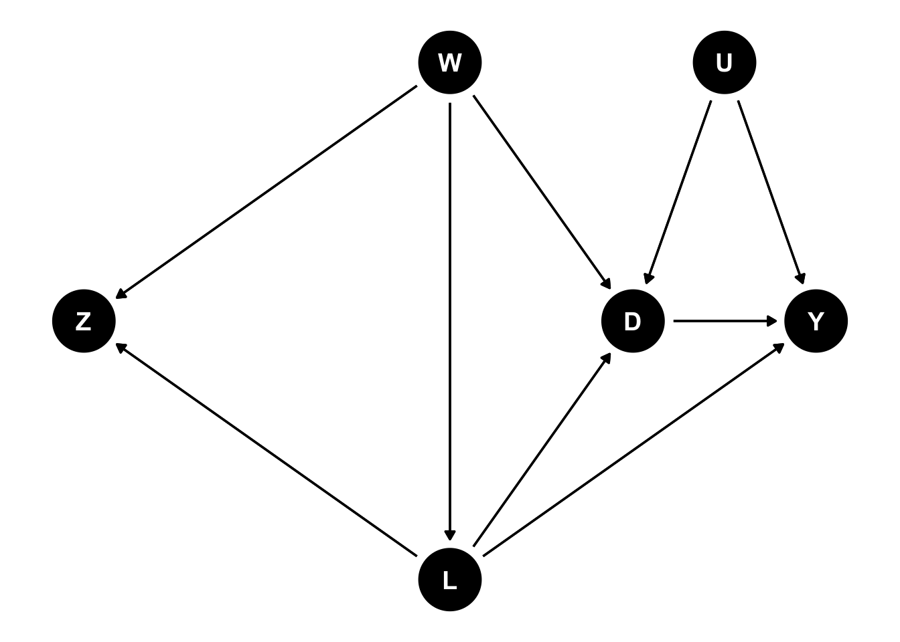
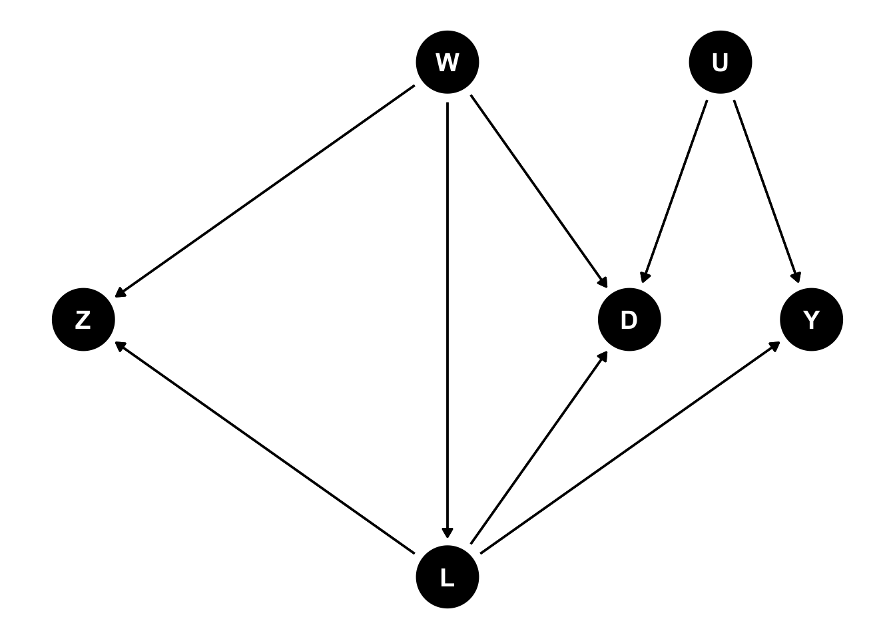
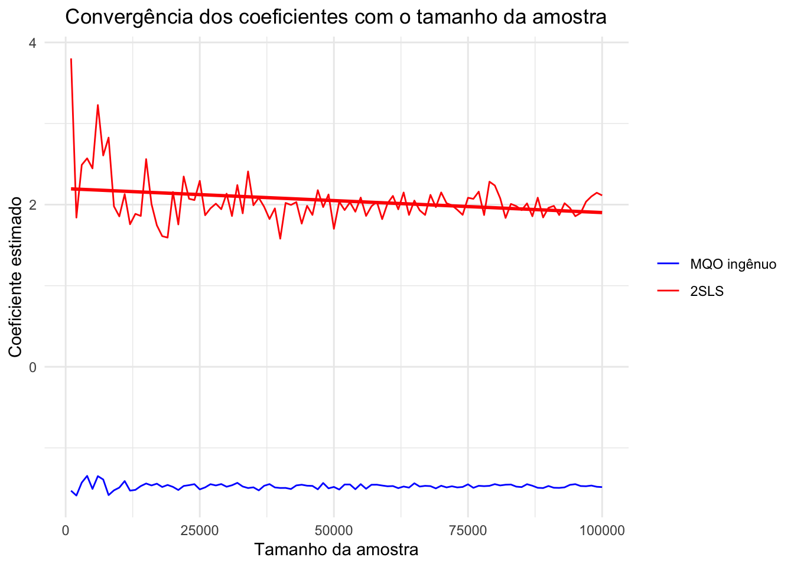

Capítulo 7 Variáveis Instrumentais
7.1 Introdução
O risco de ser convocado para uma guerra muda as atitudes políticas de quem o enfrenta? A pergunta atravessa décadas de debate sobre formação política e juventude. A resposta tentadora seria comparar quem foi convocado com quem não foi, ou quem combateu com quem não combateu. Mas essas populações diferem em classe, escolaridade, região e disposições prévias: quem se alistou voluntariamente, quem ficou de fora por dispensa estudantil ou médica, quem pôde pagar pela faculdade para evitar a convocação. Uma simples diferença de média confunde o efeito do risco com tudo que distinguia os indivíduos antes dele.
Em 1º de dezembro de 1969, no auge da Guerra do Vietnã, o governo americano sorteou em televisão nacional a ordem de convocação dos jovens em idade de servir. Cada data de nascimento recebeu um número de 1 a 366; números baixos eram chamados primeiro, números altos escapariam. Erikson and Stoker (2011) usam o número sorteado como instrumento para a vulnerabilidade à convocação, em vez de para o serviço militar efetivo: o que importa é a expectativa de poder ser chamado a servir, antes mesmo de o chamado se concretizar. O número é aleatório por design, afeta a probabilidade percebida de ser convocado, e não tem motivo plausível para afetar atitudes décadas depois por outro canal. O resultado: jovens com números baixos se tornaram mais antiguerra, mais liberais e mais propensos a se identificar com o Partido Democrata. O efeito persiste em entrevistas décadas depois e não é mediado pelo serviço militar efetivo: a transformação política veio do risco percebido, não do combate.
Essa é a lógica das variáveis instrumentais. O restante do capítulo desenvolve as condições sob as quais ela funciona: começa pela formulação em DAGs, passa pelo modelo estrutural e pelos mínimos quadrados em dois estágios, e termina sob heterogeneidade de efeitos, em que VI identifica o LATE, o efeito médio sobre quem responde ao instrumento.
Considere o seguinte DAG canônico de Variáveis Instrumentais:

Nós vemos que o efeito causal do tratamento \(D\) é confundido pela variável não observada \(U\), já que temos um backdoor aberto. Porém, a variável \(Z\) não tem nenhum caminho aberto para \(Y\) exceto via \(D\), isto é, \(D\) é um mediador do efeito causal de \(Z\).
Do ponto de vista não paramétrico (DAGs), dizemos que a variável \(Z\) é uma candidata a variável instrumental (IV) se:
\(Z\) está conectado a \(D\) no grafo original. Condição de relevância.
No grafo em que a seta de \(D\) para \(y\) é removida, \(Z\) é d-separado de \(Y\). Exclusion Restriction.
A variável instrumental \(Z\) não compartilha causa comum com \(Y\), incluindo, portanto, não ser descendente de \(D\). Causa comum.
Em alguns casos, é necessário controlar para um conjunto de covariáveis \(X\) para que a segunda condição seja satisfeita; chamamos isso de IV condicional. Note também que dizemos que \(Z\) é apenas uma candidata a instrumento porque as três condições acima, embora necessárias, não são suficientes — discutiremos adiante o que mais é preciso (em particular, monotonicidade, sob heterogeneidade de efeitos).
A literatura econométrica às vezes formula a condição 3 dizendo que \(Z\) deve causar \(D\). A direção da implicação é correta: se \(Z\) causa \(D\) e é tratado como exógeno, segue-se que \(Z\) e \(Y\) não compartilham causa comum, validando a condição 3. A volta é falsa: VI não exige que \(Z\) cause \(D\). Manter as condições 2 (exclusão) e 3 (causa comum) separadas torna esse ponto visível, porque a condição 2 fecha caminhos diretos de \(Z\) para \(Y\) e a condição 3 fecha caminhos por confundimento, sem que nenhuma das duas exija causalidade \(Z \to D\). O DAG abaixo mostra um caso em que \(Z\) não causa \(D\) e ainda assim é VI candidata: condicionando em \(V_3\), um collider entre \(Z\) e \(D\), induz-se a correlação que satisfaz a relevância sem violar a condição 3.

Do mesmo jeito, se \(V_3\) for causa comum de \(Z\) e \(D\), não controlar para ela torna \(Z\) admissível como VI.

Será que \(Z\) pode ser uma IV no DAG abaixo?

Vamos verificar as condições. É fácil ver que \(Z\) está conectado a \(D\), já que temos dois caminhos abertos, um via \(W\) e outro via \(L\) (e ainda um via \(W\) via \(L\)). Portanto, a primeira condição está satisfeita. Note que se eu controlar simultaneamente para \(W\) e \(L\), então eu fecho todos os caminhos abertos.
Com relação à segunda condição, remover a flecha de \(D\) para \(Y\) é, efetivamente, ter um novo DAG:

Por fim, \(Z\) não compartilha causa comum com \(Y\).
Nesse DAG, \(Z\) não está d-separado de \(Y\), pois existe um caminho aberto para \(Y\) via \(L\). Portanto, controlando para \(L\) (mas não \(W\)), tenho um instrumento que passa nas duas condições.
Até aqui vimos as condições para que uma variável seja candidata a instrumento a partir da perspectiva de DAGs. Vejamos agora como essas condições se traduzem em um modelo estrutural paramétrico.
7.2 IV com modelo estrutural
A perspectiva em DAGs nos diz quando uma variável é candidata a IV. Para estimar o efeito causal, precisamos de uma representação paramétrica. O modelo estrutural canônico de IV escreve duas equações simultâneas, uma para o resultado e outra para o tratamento, com uma variável não observada \(U\) entrando em ambas:
\[\begin{equation} \begin{aligned} y_i &= \beta D_i + \delta_2 U + e_i \\ D_i &= \delta_1 U + \pi z_i + u_i \end{aligned} \tag{7.1} \end{equation}\]
As duas equações são estruturais: representam relações causais, não apenas associações estatísticas. O parâmetro de interesse é \(\beta\), o efeito causal de \(D\) sobre \(Y\). Para identificá-lo via MQO da equação de \(y\), precisaríamos da exogeneidade do tratamento, \(\mathbb{E}[e_i \mid D_i] = 0\). Essa condição falha: \(D_i\) é endógeno porque \(U\) aparece nas duas equações. Esse é o viés de variável omitida que o DAG canônico mostra graficamente, com o backdoor \(D \leftarrow U \to Y\) contaminando a estimativa de \(\beta\).
O instrumento \(z_i\), por construção, entra na equação de \(D_i\) mas não na equação de \(y_i\). Essa ausência é a restrição de exclusão: \(z\) está excluído do RHS da equação de \(Y\). Sob este modelo, a hipótese se traduz operacionalmente em \(\mathbb{E}[z_i \, e_i] = 0\), ou seja, o instrumento é não-correlacionado com o erro estrutural de \(Y\). O coeficiente \(\pi\) na equação de \(D_i\) é o efeito causal do instrumento sobre o tratamento — o primeiro estágio — e sua positividade é a condição de relevância.
Suponha, para simplificar, que \(D_i\) e \(z_i\) são binários. Nesse caso, uma diferença simples de média identifica \(\pi\):
\[\hat{\pi} = \bar{D}_{\{Z=1\}} - \bar{D}_{\{Z=0\}} = \frac{\sum_{i} z_i D_i}{\sum_{i} z_i} - \frac{\sum_{i} (1-z_i) D_i}{\sum_{i} (1-z_i)}.\]
Mas \(\hat\pi\) é o efeito do instrumento sobre o tratamento, não o efeito do tratamento sobre o resultado. O que queremos é \(\beta\). Para chegar lá, precisamos de uma estratégia que use \(z\) para isolar a parte exógena de \(D\) e use essa parte para identificar \(\beta\). Essa estratégia é a regressão em dois estágios.
7.3 MQO em 2 Estágios
Considere novamente o DAG canônico para IV. Como poderíamos estimar o efeito causal de \(D\) sobre \(Y\)?
Uma possibilidade é a chamada forma reduzida, que pode ser derivada a partir da suposição de independência. Antes, vamos introduzir uma notação:
A notação \(Y_i(d, z)\) indica o resultado potencial da unidade \(i\) se ela recebesse tratamento \(d\) e valor \(z\) do instrumento. Sob a restrição de exclusão (Seção 7.6.3), \(Y_i(d, z) = Y_i(d, z')\) para todo \(z, z'\), e a notação simplifica para \(Y_i(d)\). Adotamos \(Y_i(d)\) no que segue, com os valores específicos \(Y_i(0)\) e \(Y_i(1)\).
E também temos um status potencial do tratamento (em oposição ao tratamento observado): \(D^1_i\) é o status do tratamento quando \(Z=1\). Similarmente, \(D^0_i\) é o status do tratamento quando \(Z=0\).
E aqui temos uma nova switching equation:
\[D_i = D^0_i + (D^1_i - D^0_i)Z_i\]
\[\begin{align} E\big[Y_i\mid Z_i=1\big]-E\big[Y_i\mid Z_i=0\big] & = E\big[Y_i(D_i^1,1)\mid Z_i=1\big]- E\big[Y_i(D_i^0,0)\mid Z_i=0\big] \\ & = E[Y_i(D_i^1,1)] - E[Y_i(D_i^0,0)] \end{align}\]
O estimador é o efeito causal (total) de \(Z\) sobre \(Y\). Em um experimento, isso é chamado de intent to treat, pois se a aleatorização é o instrumento, então é o efeito causal da intenção de tratar.
library(stargazer)
n <- 100000
set.seed(123)
z <- rnorm(n)
u <- rnorm(n, 0 , 3)
treatment <- rbinom(n, 1, plogis(z - u + rnorm(n, 0, 2)))
y <- 2*treatment + u
reg_vies <- lm(y ~ treatment)
reg_1s <- lm(treatment ~ z)
reg_2s <- lm(y ~ fitted(reg_1s))
stargazer(reg_vies, reg_1s, reg_2s,
type = ifelse(knitr::is_html_output(), "html", "latex"),
title = "OLS e 2SLS")| Dependent variable: | |||
| y | treatment | y | |
| (1) | (2) | (3) | |
| treatment | -1.495*** | ||
| (0.016) | |||
| z | 0.095*** | ||
| (0.002) | |||
| fitted(reg_1s) | 1.916*** | ||
| (0.085) | |||
| Constant | 1.760*** | 0.499*** | 0.058 |
| (0.011) | (0.002) | (0.043) | |
| Observations | 100,000 | 100,000 | 100,000 |
| R2 | 0.085 | 0.036 | 0.005 |
| Adjusted R2 | 0.085 | 0.036 | 0.005 |
| Residual Std. Error (df = 99998) | 2.453 | 0.491 | 2.558 |
| F Statistic (df = 1; 99998) | 9,283.268*** | 3,739.184*** | 505.426*** |
| Note: | p<0.1; p<0.05; p<0.01 | ||
A primeira coluna traz a regressão ingênua de \(Y\) sobre \(D\): o coeficiente está viesado porque \(U\) afeta \(D\) e \(Y\) ao mesmo tempo, e a covariância induzida puxa a estimativa para longe do efeito verdadeiro \(\beta = 2\) usado na simulação. A segunda coluna é o primeiro estágio: \(Z\) desloca \(D\) na direção esperada. A terceira coluna regrede \(Y\) sobre \(\hat{D}\), a parte de \(D\) projetada sobre \(Z\), e recupera um coeficiente próximo de \(2\). A diferença entre a primeira e a terceira coluna é o viés que VI corrige.
library(tidyverse)
library(ggplot2)
simulate_and_fit <- function(n) {
z <- rnorm(n)
u <- rnorm(n, 0, 3)
treatment <- rbinom(n, 1, plogis(z - u + rnorm(n, 0, 2)))
y <- 2 * treatment + u
# Naive regression
reg_vies <- lm(y ~ treatment)
# 2SLS
reg_1s <- lm(treatment ~ z)
predicted_treatment <- predict(reg_1s)
reg_2s <- lm(y ~ predicted_treatment)
# Return coefficients
tibble(
naive_coef = coef(reg_vies)[2],
tsls_coef = coef(reg_2s)[2]
)
}
# Sample sizes to simulate
sample_sizes <- seq(1000, 100000, by = 1000)
# Use map to apply the function to each sample size
results <- tibble(sample_size = sample_sizes) %>%
mutate(
simulation_results = map(sample_size, simulate_and_fit)
) %>%
unnest(cols = c(simulation_results))
results %>%
pivot_longer(cols = c(naive_coef, tsls_coef), names_to = "method", values_to = "coefficient") %>%
ggplot(aes(x = sample_size, y = coefficient, color = method)) +
geom_line() +
geom_smooth(data = . %>% filter(method == "tsls_coef"), method = "lm", se = FALSE, color = "red") +
labs(
title = "Convergência dos coeficientes com o tamanho da amostra",
x = "Tamanho da amostra",
y = "Coeficiente estimado",
color = "Método"
) +
theme_minimal() +
scale_color_manual(
values = c("naive_coef" = "blue", "tsls_coef" = "red"),
labels = c("naive_coef" = "MQO ingênuo", "tsls_coef" = "2SLS")
) +
theme(
plot.title = element_text(hjust = 0.5),
legend.title = element_blank()
)## `geom_smooth()` using formula = 'y ~ x'
A leitura do gráfico mostra duas trajetórias bem distintas. A curva azul (MQO ingênuo) estabiliza em torno de um valor menor que \(\beta = 2\) — esse é o viés de variável omitida, que não desaparece com \(n\) porque o problema é de identificação, não de variância amostral. A curva vermelha (2SLS) oscila mais para amostras pequenas (a divisão por \(\hat\pi\) ruidoso amplifica o erro), mas converge para \(2\) conforme \(n\) cresce. O ponto pedagógico: \(n\) grande não corrige viés se a estratégia de identificação está errada; corrige apenas variância dado uma estratégia válida.
7.4 Efeito heterogêneo
Os resultados anteriores supuseram que o efeito do tratamento é homogêneo: \(Y_i(1) - Y_i(0) = \beta\) para toda unidade \(i\). Quando o efeito varia entre indivíduos, o que IV identifica deixa de ser o ATE — passa a ser um efeito médio sobre um subgrupo específico, definido pelo próprio instrumento.
Para discutir efeito causal heterogêneo, vamos utilizar um estudo em ciência política (White 2019). Qual é o efeito de uma condenação por misdemeanor (algo como contravenção penal) sobre comparecimento eleitoral? O autor argumenta que o efeito deve variar por raça (maior para negros que brancos), de modo que o efeito causal é heterogêneo. Segundo o autor, casos são atribuídos aleatoriamente a diferentes cortes judiciais, e elas variam em sua leniência. Aqui, o tratamento é a condenação (\(D_i = 1\) se condenado, \(0\) caso contrário), e o instrumento é o sorteio de um juiz mais ou menos leniente.
Formalmente, o efeito causal heterogêneo é \(\delta_i = Y_i(1) - Y_i(0)\). Nesse caso, não podemos mais estimar o efeito causal médio populacional (ATE), porque o instrumento só explica variação no tratamento para um subgrupo da população: os compliers. Antes de derivar o estimador, vale fixar o vocabulário.
7.5 Tipologia de unidades
Sob um instrumento binário \(Z_i \in \{0, 1\}\), cada unidade tem dois status potenciais de tratamento, \(D^0_i\) (se \(Z_i = 0\)) e \(D^1_i\) (se \(Z_i = 1\)). A combinação dos dois define quatro tipos:
| \(D^0_i = 0\) | \(D^0_i = 1\) | |
|---|---|---|
| \(D^1_i = 0\) | never-takers | defiers |
| \(D^1_i = 1\) | compliers | always-takers |
No estudo de White (2019):
- Always-takers são acusados que serão condenados qualquer que seja o juiz sorteado — em geral aqueles com forte conjunto de evidências contra si.
- Never-takers são acusados que serão absolvidos qualquer que seja o juiz — em geral aqueles com poucas evidências.
- Compliers são acusados cuja condenação responde ao instrumento: condenados se enviados ao juiz severo, absolvidos se enviados ao leniente.
- Defiers seriam acusados que fariam o oposto: absolvidos pelo juiz severo e condenados pelo leniente. Substantivamente, isso não faz sentido no contexto, mas teoricamente é uma possibilidade que precisa ser excluída por hipótese.
Apenas o subgrupo dos compliers fornece variação útil para identificar efeito causal a partir do instrumento. Para always- e never-takers, o instrumento não move o tratamento; para defiers, move-o na direção contrária. As suposições adicionais a seguir excluem defiers da população e isolam o efeito local sobre os compliers.
7.6 Suposições para o LATE
7.6.1 SUTVA
Resultados potenciais para a unidade \(i\) não dependem do tratamento recebido por \(j\). Há potencial para SUTVA ser violada no estudo de encarceramento e voto: se dois irmãos (\(i\) e \(j\)) são acusados e um deles é preso, o tratamento de um pode impactar a probabilidade de voto do outro. White não discute explicitamente essa possibilidade. Vamos supor, porém, que SUTVA esteja garantido.
7.6.2 Independência
Também chamada de as good as random assignment ou no confounding for the effect of \(Z\) on \(Y\): o instrumento é independente dos resultados potenciais \(Y_i(d)\) e dos status potenciais de tratamento \(D^z_i\). No estudo de White, a aleatorização da corte sustenta essa hipótese: é difícil imaginar variável que cause a leniência judicial e simultaneamente o comparecimento eleitoral.
Vale tornar o mapeamento entre as duas formulações de IV explícito. Cada uma das três suposições não-paramétricas vistas no início do capítulo tem uma contrapartida em resultados potenciais (Tabela 7.1).
| Hipótese | DAG | Resultados potenciais |
|---|---|---|
| Relevância | \(Z\) conectado a \(D\) no grafo original | \(\mathbb{E}[D^1_i] \neq \mathbb{E}[D^0_i]\) |
| Exclusão | \(Z\) d-separado de \(Y\) no grafo sem \(D \to Y\) | \(Y_i(d, z) = Y_i(d, z')\) para todo \(i, d, z, z'\) |
| Sem confundimento | \(Z\) não compartilha causa comum com \(Y\) | \(Z_i \perp\!\!\!\perp \{Y_i(d), D^z_i\}\) |
A linha “sem confundimento” é onde os dois frameworks divergem. A versão em resultados potenciais é estritamente mais forte: exige independência também em relação aos status potenciais \(D^z_i\), o que excluiria casos como o DAG com causa comum \(V_3\) visto na introdução. Em aplicações típicas \(Z\) é tratado como raiz do DAG (sem parents), e as duas formulações coincidem operacionalmente; adotamos a versão em resultados potenciais para a derivação do LATE adiante.
7.6.3 Restrição de Exclusão
A restrição de exclusão requer que o instrumento \(Z\) afete o resultado \(Y\) apenas por meio do tratamento \(D\). Não há efeito direto de \(Z\) sobre \(Y\) que não passe por \(D\). A suposição não é testável diretamente: precisa ser justificada com argumentos substantivos sobre o mecanismo.
A literatura formula essa hipótese em três linguagens: estrutural clássica, DAG e resultados potenciais. Sob homogeneidade linear (efeito do tratamento constante), as três são equivalentes. Sob heterogeneidade, a formulação em resultados potenciais distingue exclusão de independência, e essa separação vale conhecer.
7.6.3.1 Formulação estrutural clássica
No modelo \[y_i = \beta D_i + \delta_2 U + e_i,\] a restrição de exclusão é o fato de que \(z_i\) não aparece no RHS desta equação. Sob exogeneidade do erro estrutural, isso se traduz operacionalmente em \(\mathbb{E}[z_i \, e_i] = 0\): o instrumento é não-correlacionado com o erro estrutural de \(Y\). Aqui exclusão e exogeneidade do instrumento ficam empacotadas em uma única condição.
7.6.3.2 Formulação em DAGs
Tome o DAG canônico e remova a flecha \(D \to Y\). A restrição de exclusão diz que, neste DAG modificado, \(Z\) é d-separado de \(Y\). Não há nenhum caminho aberto entre \(Z\) e \(Y\) uma vez que se deleta o canal via \(D\). A hipótese fica geometricamente legível: se cortar a ponte \(D \to Y\) deixa \(Z\) desconectado de \(Y\) no grafo, a exclusão vale; se sobra algum caminho (por exemplo, \(Z \to W \to Y\)), a exclusão é violada por esse \(W\). Esta talvez seja a formulação mais limpa para o leitor que já está confortável com DAGs.
7.6.3.3 Formulação em resultados potenciais
Define-se \(Y_i(d, z)\) como o resultado potencial da unidade \(i\) se ela recebesse tratamento \(d\) e valor \(z\) do instrumento. A restrição de exclusão é \[Y_i(d, z) = Y_i(d, z') \quad \text{para todo } i, d, z, z'.\] Dado o tratamento, o valor do instrumento não altera o resultado potencial. A notação simplifica para \(Y_i(d)\), como se o instrumento caísse fora da função de resultado potencial.
7.6.3.4 Exemplo de violação
O caso clássico é o uso de chuva como instrumento para comparecimento eleitoral. Mellon (2023) revisou 289 estudos e identificou 195 variáveis distintas que foram conectadas com chuva na literatura. Qualquer uma delas é candidata a canal direto entre chuva e o resultado de interesse, violando a exclusão. Em DAGs: se chuva afeta humor, e humor afeta voto, há um caminho aberto \(Z \to \text{humor} \to Y\) que não passa por comparecimento.
7.6.4 Monotonicidade
A monotonicidade requer que o instrumento opere (fracamente) na mesma direção para todas as unidades: ele só move pessoas do controle para o tratamento (ou não move ninguém), nunca o contrário. Em outras palavras, não há defiers na população.
Formalmente, \(D^1_i \geq D^0_i\) para todo \(i\). No estudo de White, isso significa que ninguém é condenado pelo juiz leniente e absolvido pelo severo — uma hipótese substantivamente plausível.
7.7 Identificação do LATE
Sob SUTVA, independência, exclusão e monotonicidade, vamos identificar o LATE em três passos: (i) decompor o efeito do instrumento sobre o resultado por tipo de unidade e mostrar que três dos quatro termos zeram; (ii) reescrever a proporção de compliers em termos observáveis; (iii) isolar o LATE.
7.7.1 Passo 1: decomposição por tipo
Partindo de \(\mathbb{E}[Y_i \mid Z_i = 1] - \mathbb{E}[Y_i \mid Z_i = 0]\), sob exclusão e independência o lado direito é igual a \(\mathbb{E}[Y_i(D^1_i) - Y_i(D^0_i)]\). Pela lei da esperança total, condicionando no tipo da unidade:
\[\begin{align} \mathbb{E}[Y_i \mid Z_i = 1] - \mathbb{E}[Y_i \mid Z_i = 0] =\;& \mathbb{E}[Y_i(D^1_i) - Y_i(D^0_i) \mid \text{always-takers}] \cdot P(\text{always-takers}) \\ +& \mathbb{E}[Y_i(D^1_i) - Y_i(D^0_i) \mid \text{never-takers}] \cdot P(\text{never-takers}) \\ +& \mathbb{E}[Y_i(D^1_i) - Y_i(D^0_i) \mid \text{compliers}] \cdot P(\text{compliers}) \\ +& \mathbb{E}[Y_i(D^1_i) - Y_i(D^0_i) \mid \text{defiers}] \cdot P(\text{defiers}) \end{align}\]
onde os tipos são definidos pelos pares \((D^1_i, D^0_i)\) apresentados em §7.5. Para always-takers (\(D^1_i = D^0_i = 1\)) e never-takers (\(D^1_i = D^0_i = 0\)), o integrando é \(Y_i(d) - Y_i(d) = 0\) por construção. Não são as probabilidades que zeram — always- e never-takers existem com probabilidade positiva; o que zera é o que está dentro da esperança. Para defiers, o integrando não é zero, mas a probabilidade zera pela monotonicidade: \(P(\text{defiers}) = P(D^1_i = 0, D^0_i = 1) = 0\). Sobra apenas o termo dos compliers, para os quais \(Y_i(D^1_i) - Y_i(D^0_i) = Y_i(1) - Y_i(0)\):
\[\begin{equation} \mathbb{E}[Y_i \mid Z_i = 1] - \mathbb{E}[Y_i \mid Z_i = 0] = \mathbb{E}[Y_i(1) - Y_i(0) \mid \text{complier}] \cdot P(\text{complier}). \tag{7.2} \end{equation}\]
7.7.2 Passo 2: identificar \(P(\text{complier})\)
O lado esquerdo de (7.2) é a forma reduzida — observável diretamente. O primeiro fator do lado direito é o LATE — o que queremos. Falta o segundo fator, \(P(\text{complier})\). Sob monotonicidade, a partição em tipos satisfaz
\[\begin{equation} P(D_i = 1 \mid Z_i = 1) = P(\text{complier}) + P(\text{always-taker}) \tag{7.3} \end{equation}\]
\[\begin{equation} P(D_i = 1 \mid Z_i = 0) = P(\text{always-taker}). \tag{7.4} \end{equation}\]
A equação (7.3) soma always-takers e compliers — os únicos tipos que recebem \(D = 1\) quando \(Z = 1\). A equação (7.4) fica só com always-takers, já que defiers foram eliminados pela monotonicidade. Subtraindo (7.4) de (7.3):
\[\begin{equation} P(\text{complier}) = P(D_i = 1 \mid Z_i = 1) - P(D_i = 1 \mid Z_i = 0). \tag{7.5} \end{equation}\]
Como \(D_i\) é binário, \(P(D_i = 1 \mid Z_i = z) = \mathbb{E}[D_i \mid Z_i = z]\) (a esperança de uma Bernoulli é a probabilidade do evento). A equação (7.5) se reescreve em termos de esperanças observáveis:
\[\begin{equation} P(\text{complier}) = \mathbb{E}[D_i \mid Z_i = 1] - \mathbb{E}[D_i \mid Z_i = 0]. \tag{7.6} \end{equation}\]
Essa diferença é justamente o primeiro estágio — o efeito do instrumento sobre o tratamento.
7.7.3 Passo 3: isolar o LATE
Substituindo (7.6) em (7.2), o segundo fator do lado direito vira a diferença observada \(\mathbb{E}[D_i \mid Z_i = 1] - \mathbb{E}[D_i \mid Z_i = 0]\) no lugar de \(P(\text{complier})\):
\[\begin{equation} \begin{aligned} &\mathbb{E}[Y_i \mid Z_i = 1] - \mathbb{E}[Y_i \mid Z_i = 0] \\ &\quad = \mathbb{E}[Y_i(1) - Y_i(0) \mid \text{complier}] \cdot \left( \mathbb{E}[D_i \mid Z_i = 1] - \mathbb{E}[D_i \mid Z_i = 0] \right). \end{aligned} \tag{7.7} \end{equation}\]
Para isolar o LATE, dividimos os dois lados de (7.7) pela diferença \(\mathbb{E}[D_i \mid Z_i = 1] - \mathbb{E}[D_i \mid Z_i = 0]\) — o primeiro estágio. Sob relevância, esse denominador é diferente de zero, e a divisão é bem definida:
\[\begin{equation} \begin{aligned} \delta_{IV,LATE} &= \mathbb{E}[Y_i(1) - Y_i(0) \mid \text{complier}] \\ &= \frac{\mathbb{E}[Y_i \mid Z_i = 1] - \mathbb{E}[Y_i \mid Z_i = 0]} {\mathbb{E}[D_i \mid Z_i = 1] - \mathbb{E}[D_i \mid Z_i = 0]}. \end{aligned} \tag{7.8} \end{equation}\]
Este é o estimador de Wald: a razão entre forma reduzida (numerador) e primeiro estágio (denominador). O denominador é a proporção de compliers na população; sua positividade requer relevância — sem variação induzida em \(D\), o Wald não é definido.
7.7.4 Localidade do LATE
O LATE é um parâmetro local: refere-se apenas ao subgrupo de compliers, não à população inteira. Essa localidade é simultaneamente uma força e uma limitação. Força: o efeito está bem definido sob suposições críveis e é o que o instrumento de fato identifica. Limitação: quem é complier depende do instrumento — outro instrumento, outro grupo de compliers, outro LATE — e o efeito sobre always- e never-takers permanece desconhecido. No estudo de White, o LATE é interpretado substantivamente como o efeito da condenação sobre comparecimento eleitoral entre acusados marginais, cuja sentença depende do juiz que pegaram. Vejamos agora questões práticas de estimação.
7.8 Estimação e força do instrumento
7.8.1 Derivação do estimador 2SLS
Considere o modelo simplificado em que as variáveis estão centradas (sem constante) e não há controles:
\[\begin{equation} \begin{aligned} y_i &= \beta D_i + e_i \\ D_i &= \pi z_i + u_i \end{aligned} \tag{7.9} \end{equation}\]
Substituindo a equação do primeiro estágio na equação de resultado, \(y_i\) pode ser expresso em termos de \(z_i\) apenas:
\[\begin{equation} \begin{aligned} y_i &= \beta (\pi z_i + u_i) + e_i \\ &= \underbrace{\beta \pi}_{\delta}\, z_i + \underbrace{\beta u_i + e_i}_{v_i}. \end{aligned} \tag{7.10} \end{equation}\]
A equação (7.10) é a forma reduzida: \(y_i\) projetado diretamente sobre o instrumento \(z_i\), com coeficiente \(\delta = \beta \pi\). A regressão de \(y\) sobre \(z\) identifica \(\hat\delta\); a regressão de \(D\) sobre \(z\) identifica \(\hat\pi\). Como \(\delta = \beta \pi\) na estrutura, segue-se que \(\beta = \delta / \pi\). Substituindo as quantidades populacionais por estimativas:
\[\begin{equation} \hat\beta_{2SLS} = \frac{\hat\delta}{\hat\pi}. \tag{7.11} \end{equation}\]
Esta é a versão regressiva do estimador de Wald visto na seção anterior: numerador é a forma reduzida, denominador é o primeiro estágio. Equivalentemente, no algoritmo em dois estágios: regrida \(D\) sobre \(z\) para obter \(\hat D = \hat\pi z\); em seguida regrida \(y\) sobre \(\hat D\). O coeficiente da segunda regressão é exatamente \(\hat\delta / \hat\pi\).
7.8.2 Por que dividir por \(\hat\pi\) é problemático sob instrumento fraco
A divisão por \(\hat\pi\) na equação (7.11) é o que torna a estimação delicada: quando o primeiro estágio é fraco, \(\hat\pi\) é próximo de zero, e pequenas perturbações em \(\hat\delta\) ou \(\hat\pi\) se amplificam dramaticamente na razão. Sob homocedasticidade, é possível mostrar que o viés de \(\hat\beta_{2SLS}\) em amostras finitas se relaciona com a estatística \(F\) do primeiro estágio segundo
\[\begin{equation} \mathbb{E}[\hat\beta_{2SLS} - \beta] \;\approx\; \underbrace{\frac{\text{Cov}(u, e)}{\text{Var}(u)}}_{\text{OVB}} \cdot \frac{k}{F + 1}, \tag{7.12} \end{equation}\]
onde \(k\) é o número de instrumentos. Se \(F = 0\), o viés é igual ao do MQO ingênuo: VI não corrige nada. Quanto maior \(F\), menor o viés. E quanto mais instrumentos para um mesmo \(F\), maior o viés em amostras finitas.
A regra de bolso clássica é \(F > 10\), devida a Staiger and Stock (1997) e refinada por Stock and Yogo (2005): com isso, o viés de 2SLS é inferior a 10% do viés de MQO com 95% de confiança. A suposição por trás dessa regra é homocedasticidade. Montiel Olea and Pflueger (2013) desenvolveram um teste robusto a heterocedasticidade que admite clustering e autocorrelação; sob essa estatística \(F\) efetiva, o ponto de corte recomendado sobe para cerca de 23,1.
7.8.3 Receita prática
Na prática, a estimação 2SLS pode ser feita com feols(y ~ 1 | d ~ z, data = df) do pacote fixest, que reporta a estatística \(F\) do primeiro estágio diretamente no output. Para a \(F\) efetiva e para o intervalo de confiança de Anderson-Rubin, válido mesmo sob instrumento fraco, o pacote ivDiag oferece uma chamada única:
A função retorna a \(F\) efetiva de Montiel Olea-Pflueger, o IC de Anderson-Rubin e diagnósticos adicionais sobre força do instrumento. Quando a \(F\) efetiva fica abaixo de 23,1, o IC de Anderson-Rubin é a base mais confiável para inferência sobre \(\beta\).
7.9 Principais usos de IV
Tendo desenvolvido a lógica de identificação e os diagnósticos do primeiro estágio, vejamos como VI tem sido aplicado em ciência política. Os exemplos abaixo cobrem dois contextos: experimentos com não-conformidade, em que o instrumento é a atribuição aleatória, e regras institucionais que produzem variação quasi-aleatória.
7.9.1 Experimentos
Em experimentos com não-conformidade (non-compliance), parte do grupo tratado não recebe a intervenção e parte do controle a recebe. Usar a atribuição aleatória como instrumento para o tratamento efetivamente recebido recupera o LATE entre os compliers. Esse parâmetro é distinto do intent-to-treat (ITT), que mede o efeito da atribuição independentemente do recebimento. ITT preserva a aleatorização sem suposições adicionais; LATE estima o efeito do tratamento sobre quem responde à atribuição. Os dois respondem a perguntas diferentes, e qual reportar depende da pergunta de pesquisa.
7.9.2 Regras com variação quasi-aleatória
Hinnerich and Pettersson-Lidbom (2014) usam uma regra na Suécia em que municípios acima de 1.500 habitantes eram obrigados pelo Local Government Act a adotar democracia representativa, enquanto municípios abaixo do limiar podiam optar entre democracia direta e representativa. O limiar populacional serve então como instrumento para o tipo de regime local. Dinas (2014) utiliza idade para votar no momento da eleição como instrumento para comparecimento eleitoral do eleitor.
7.10 Resumo e próximos passos
Neste capítulo, vimos que variáveis instrumentais permitem estimar efeitos causais mesmo na presença de confundidores não observados. As condições para que uma variável seja um instrumento válido — relevância, restrição de exclusão e ausência de causa comum — são necessárias mas não suficientes; a monotonicidade é adicionalmente requerida para estimar o LATE. Na prática, a estatística \(F\) do primeiro estágio é uma ferramenta essencial para avaliar a força do instrumento, com limiares recomendados de 10 (regra clássica) ou 23,1 (teste robusto a heterocedasticidade).
Voltando à pergunta de abertura: o efeito causal que a loteria do Vietnã identifica não é o de servir efetivamente no exército, mas o da vulnerabilidade à convocação — a expectativa de poder ser chamado — sobre as atitudes dos jovens cujo estado responde ao número sorteado. Essa é a marca registrada de VI: identifica um efeito local, sobre quem responde ao instrumento, não a média populacional. Quando essa estreiteza é assumida e interpretada com cuidado, o instrumento entrega um efeito causal bem definido mesmo sob confundimento severo.
No próximo capítulo, veremos Regressão Descontínua (RDD), um desenho quasi-experimental que explora pontos de corte em variáveis contínuas para identificar efeitos causais.